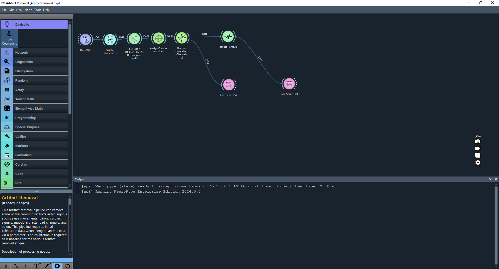
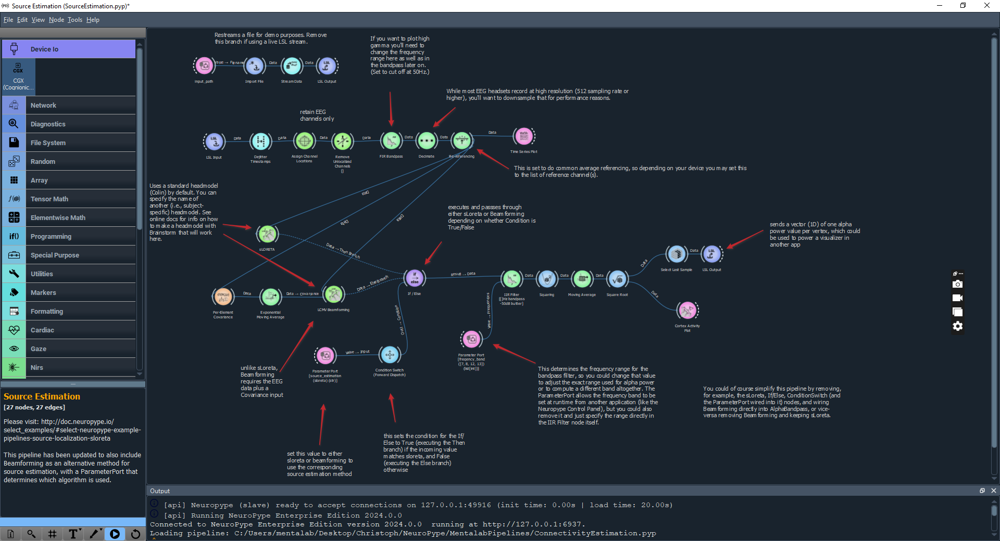
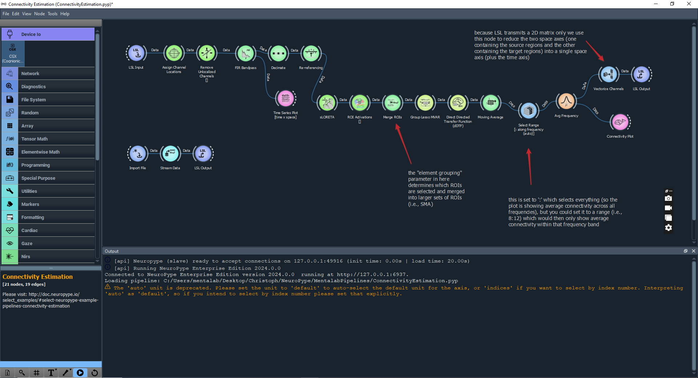

NeuroPype
Mentalab’s mobile EEG amplifiers integrate seamlessly with NeuroPype, a powerful and flexible platform for real-time brain data processing and analysis.
This page provides an introduction to using your Mentalab data with NeuroPype, highlighting key capabilities and recommended practices for both offline analysis and real-time streaming.

Example: Outcome of the Mentalab Source Localisation pipeline. ExG data on the left, source mapping on the right.
How to Use Mentalab Data with NeuroPype
You have two primary methods for getting Mentalab data into NeuroPype:
-
For offline analysis using
.bdffiles:-
Record your data: Conduct your EEG recording using your Mentalab device, ensuring the data is saved in the
.bdfformat. -
Prepare your NeuroPype environment: Ensure you have NeuroPype installed and configured.
-
Import Mentalab
.bdfdata: Use NeuroPype’s data import functionalities, for example aBDFReadernode, to load your Mentalab.bdffile into your pipeline.Specific import node details can be found in the NeuroPype Documentation.
-
-
For real-time streaming using LSL:
-
Start Mentalab LSL stream: Ensure your Mentalab device is configured to stream data via LSL.
-
Prepare your NeuroPype environment: Ensure you have NeuroPype installed and configured.
-
Import LSL stream in NeuroPype: Use NeuroPype’s LSL import functionalities, for example an
LSLStreamReadernode, to connect to the active Mentalab LSL stream within your pipeline. This allows real-time processing.Specific LSL node details can be found in the NeuroPype Documentation.
-
-
Utilise Mentalab-optimised pipelines: Access and integrate the streamlined artefact removal, source localisation, and connectivity estimation pipelines designed for Mentalab data within your NeuroPype workflow, whether processing offline files or live streams.
Data Import Options: .bdf Files and LSL Streaming
Mentalab devices offer versatile options for getting your data into NeuroPype.
Real-time Streaming with Lab Streaming Layer
For live data acquisition and real-time processing within NeuroPype, Lab Streaming Layer (LSL) is the easiest and most robust method.
Mentalab amplifiers support LSL, allowing you to stream EEG data directly from your device to NeuroPype pipelines as it is being recorded.
This is ideal for applications requiring immediate feedback or continuous monitoring.
Benefits of LSL:
-
LSL provides a standardised way to stream time-series data from various sources, such as Mentalab devices, to various processing applications, such as NeuroPype.
-
LSL ensures precise synchronisation and easy integration.
Offline Data with .bdf Files
Mentalab devices record data in the .bdf file type, BioSemi Data Format, an open and widely supported file format.
It is the 24-bit version of the common 16-bit .edf file type, European Data Format.
For optimal compatibility and ease of use with NeuroPype, we strongly recommend using the .bdf format for offline analysis.
Benefits of .bdf files:
-
No conversion required: NeuroPype can directly read and import
.bdffiles generated by Mentalab devices. This eliminates the need for additional file conversion steps, saving time and reducing potential data integrity issues. -
Immediate access: Once your Mentalab recording is complete and saved as a
.bdffile, you can immediately open and begin analysing your data within NeuroPype.
Streamlined NeuroPype Pipelines for Mentalab Data
NeuroPype’s flexible pipeline architecture allows for advanced processing of Mentalab EEG data.
We have developed and tested streamlined pipelines that build upon common NeuroPype functionalities, tailored for Mentalab recordings.
These pipelines cover crucial analysis steps.
Artefact Removal
Leveraging NeuroPype’s robust signal processing capabilities, our pipelines simplify the process of identifying and removing unwanted artefacts from your Mentalab EEG data.
This ensures cleaner signals for more accurate analysis.

Mentalab Artefact Removal pipeline.

Outcome of the Mentalab Artefact Removal pipeline. Raw data on the left, cleaned data on the right.
For general NeuroPype artefact removal examples, refer to:
Source Localisation
Gain insights into the neural generators of your Mentalab EEG signals.
Our NeuroPype integration facilitates source localisation, allowing you to estimate the intracranial origin of electrical activity.

Mentalab Source Localisation pipeline.
Outcome of the Mentalab Source Localisation pipeline. ExG data on the left, source mapping on the right.
For general NeuroPype source localisation examples, refer to:
Connectivity Estimation
Explore functional relationships between different brain regions.
Our pipelines support connectivity estimation using your Mentalab data, providing a deeper understanding of brain networks.

Mentalab Connectivity Estimation pipeline.

Outcome of the Mentalab Connectivity Estimation pipeline. Data on the left, connection graph on the right.
For general NeuroPype connectivity estimation examples, refer to:
For comprehensive documentation on NeuroPype’s functionalities and detailed instructions on building and running pipelines, refer to the official NeuroPype Documentation.